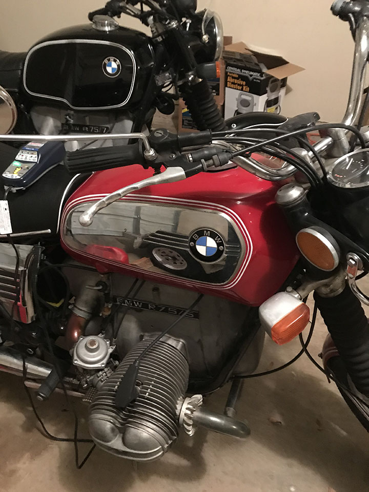

Between 1923 and 1968, BMW motorcycles hadn't changed all that much. They all had the same design and they were all black. All that changed in 1969 with the /5 models. They were 3 models available, the R50(500cc), the R60 (600cc), and the R75 (750cc). They put out 32HP for the R50, 40HP for the R60, and 50 HP for the R75. They came with drum breaks in the rear, dual drum brakes in the front, a kickstarter, and a four speed transmission. They are driveshaft driven, unlike most bikes at that time. They came available in several colors. You could also get pinstripes. In 1972, the smaller sport tank (right) was available, along with the larger touring tank. The sport tanks with the stainless inserts were quite unpopular at the time, making them rare and valuable today.